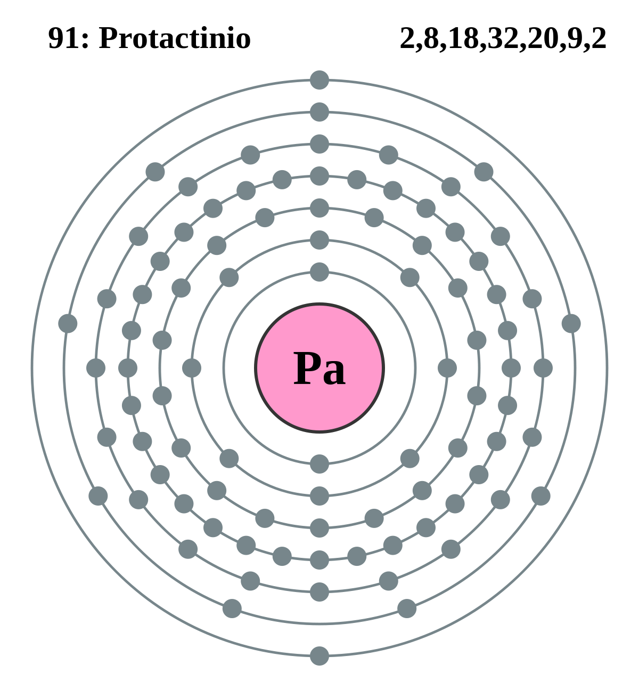

|
|
||
|
PROTACTINIO El protactinio es, desde el punto de vista formal, el tercer miembro de los actínidos y el primero en el que aparecen electrones 5f, pero su comportamiento químico en solución acuosa se asemeja al del tántalo y del niobio más que al de los otros actínidos. El protactinio metálico es plateado, maleable y dúctil. Las muestras expuestas al aire a la temperatura ambiente evidencian poco o ningún deslustre al cabo de varios meses. Los muchos compuestos del protactinio que se han preparado y caracterizado son óxidos binarios y polinarios, halogenuros, oxihalogenuros, sulfatos, oxisulfatos, sulfatos dobles, oxinitratos, selenatos, carburos, compuestos organometálicos y aleaciones con metales nobles. El protactinio puede ser tomado por el cuerpo mediante la ingestión de comida, agua o respiración de aire. Cuando se inhala el protactinio, una fracción significante puede moverse desde los pulmones a través de la sangre hasta otros órganos, dependiendo de la solubilidad del compuesto. |
 |
DATOS Número Atómico: 91 Peso Atómico: 231.0358 Electronegatividad: 1.5 Configuración Electrónica:[Rn]5f2 6d1 7s2 Estados de Oxidación: +3,+4,+5 No. de Electrones de Valencia: 3,4,5 |